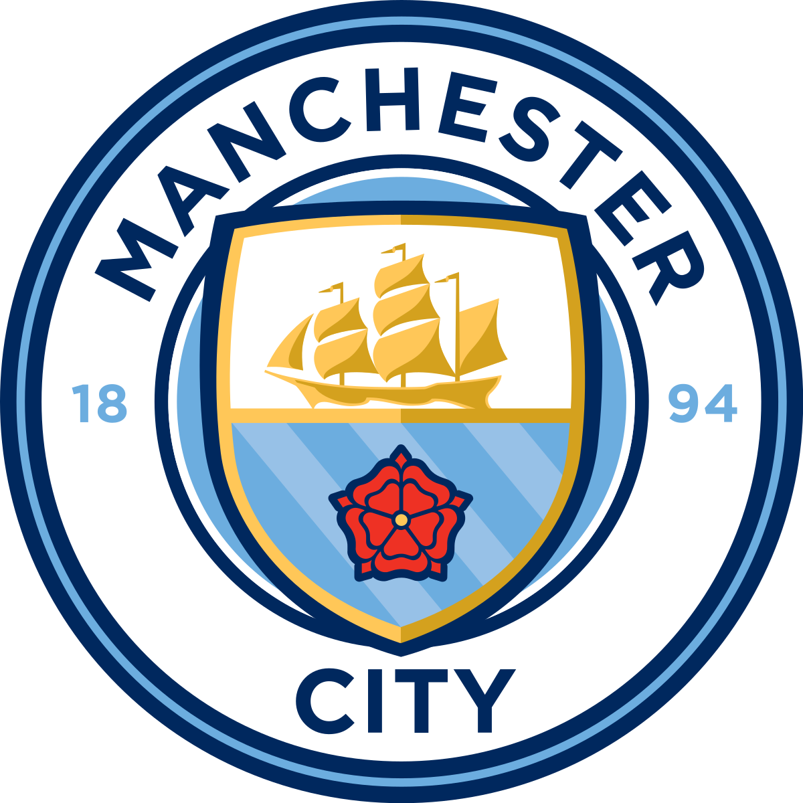

Manchester City ist ein Fußballverein aus Manchester.
Nach der Gründung im Jahr 1880 als West Gorton Saint Marks spielte der Verein ab 1887 unter dem Namen Ardwick A.F.C. und zog anschließend in die Hyde Road um, bevor 1894 der endgültige Name Manchester City F.C. entstand. Der Verein gewann siebenmal die englische Meisterschaft, sechsmal den FA Cup, sechsmal den Ligapokal und einmal den Europapokal der Pokalsieger.
Er spielt in der Premier League und hat den Großteil seiner Geschichte in der obersten Liga verbracht.Der Verein ist einer der besten der Welt und hat auch dieses Jahr sehr hohe Chancen die Champions-league zu gewinnen und englischer Meister zu werden.Der Verein ist 4,8 Milliarde Doller wert und Mit 1,014 Milliarden Euro besitzt Manchester City den teuersten Kader der Welt.
Der Verein wurde im Jahr 1880 gegründet. Der Fußballverein endstand unter dem Namen St. Mark's. 1894 wurde der Verein schließlich in Manchester City umbenannt.